淺談長文件的製作～以 Writer 為例 (3)

＊樣式與目錄篇＊
建立與套用樣式
範例的文章內分為四篇，每篇都有二到五節，這些篇名和節名都沒有設定特定的樣式（就是使用修改部份格式的預設值），現在我們先為文件名、篇名和節名設定樣式，並且套用到所有的篇名和節名。
步驟一：
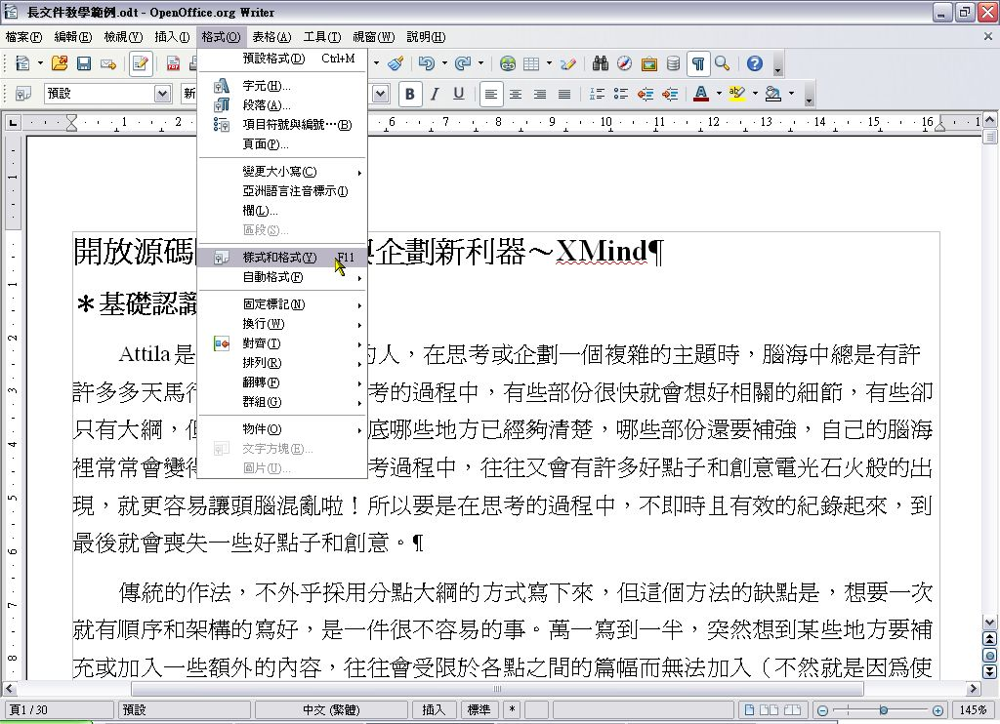
按功能表的「格式」＼「樣式和格式」。
步驟二：
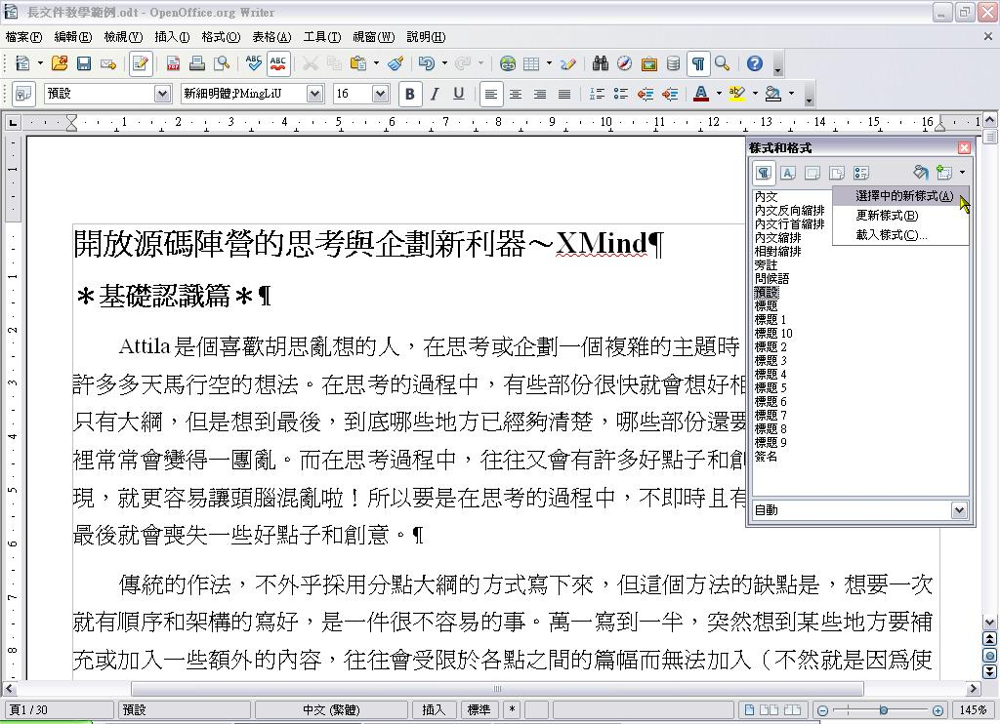
這時會開啟一個「樣式和格式」的小視窗，目前顯示的正是段落的相關樣式。現在我們要先建立文件名的標題樣式，所以先把插入點移到第一行的文件標題內，然後按「選取的新樣式」鈕，從選單內按一下「選擇中的新樣式」。
步驟三：
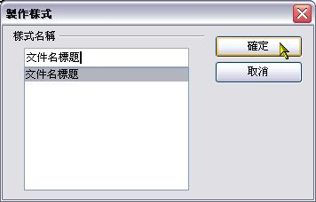
在「樣式名稱」底下的欄位輸入「文件名標題」，接著按「確定」。
步驟四：
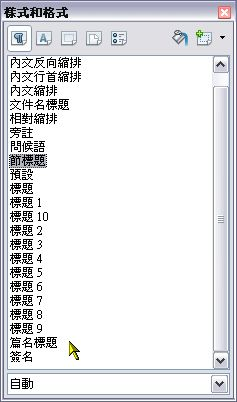
如此就會根據文件標題所設定的格式，建立起名為「文件名標題」的樣式。用同樣的方法。為篇名和節名建立相對應的樣式。（範例中分別為「篇名標題」和「節標題」）
〔補充說明〕
以中文來為樣式命名時，這些相關樣式可能會分的太散，通常Attila會在樣式名稱前面加上數序，如「01-文件名標題」、「02-篇名標題」、「03-節標題」（也代表將使用的目錄層級），如此這些自己建立的樣式就會出現在最前面，並且會連續排在一起，套用時比較方便。
步驟五：
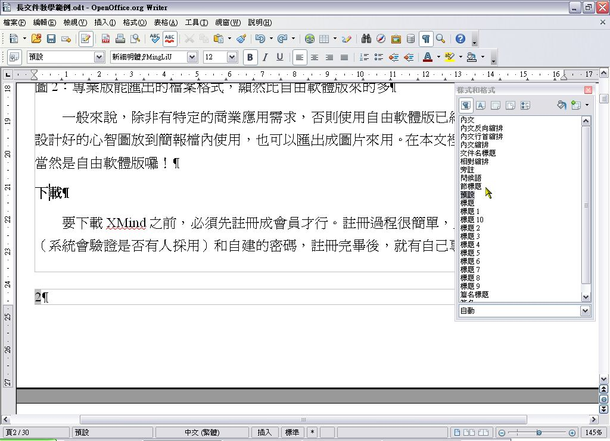
把插入點移到下一個節上面，然後在「樣式和格式」的「節標題」上按二下滑鼠。
步驟六：
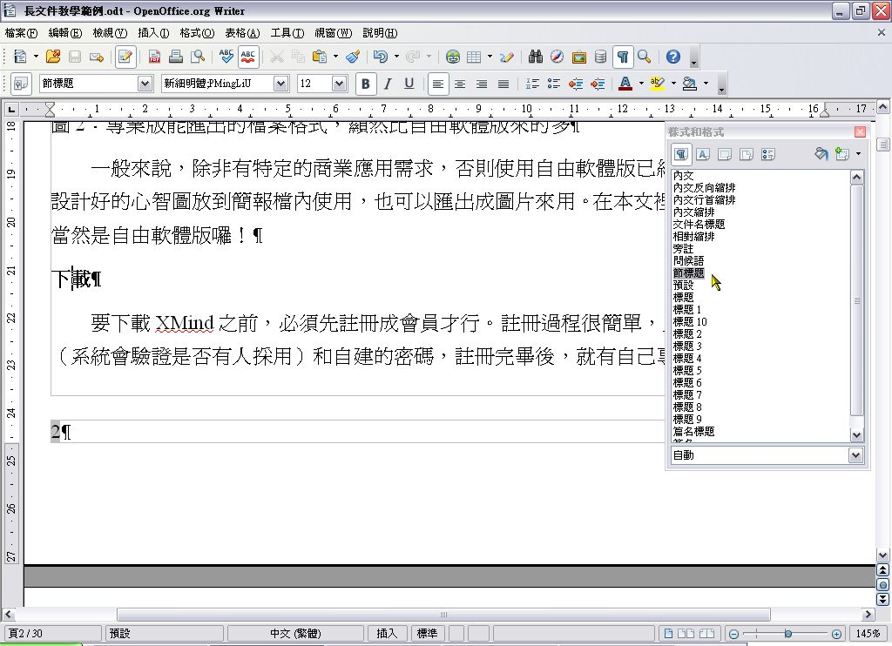
這一節就會套用「節標題」樣式。
用同樣的方法把四個篇名和節都套用它們所要用的樣式。（當文件要套用的內容多，要套用的格式也多樣，大家就會瞭解樣式的方便和威力）
建立目錄
步驟一：
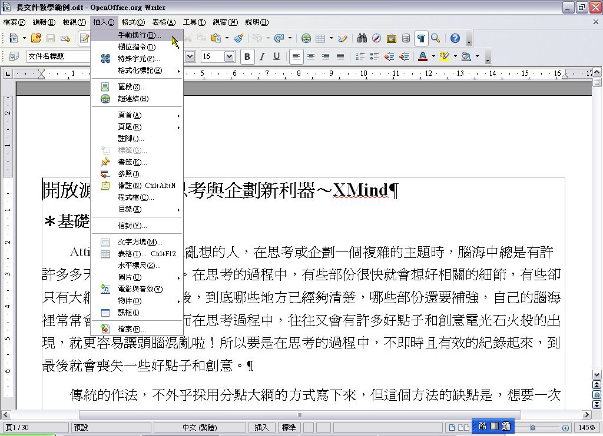
通常目錄會獨立在一頁或幾頁，不會和內文和在一起，所以我們要先獨立出一面空白頁，以便加入目錄。
我們先把插入點移到第一頁，第一行，第一個字的左邊，然後按功能表的「插入」＼「手動換行」。
步驟二：
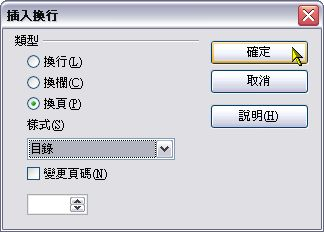
在「插入換行」的視窗內，點選「換頁」，「樣式」選擇「目錄」，最後按一下確定。
步驟三：
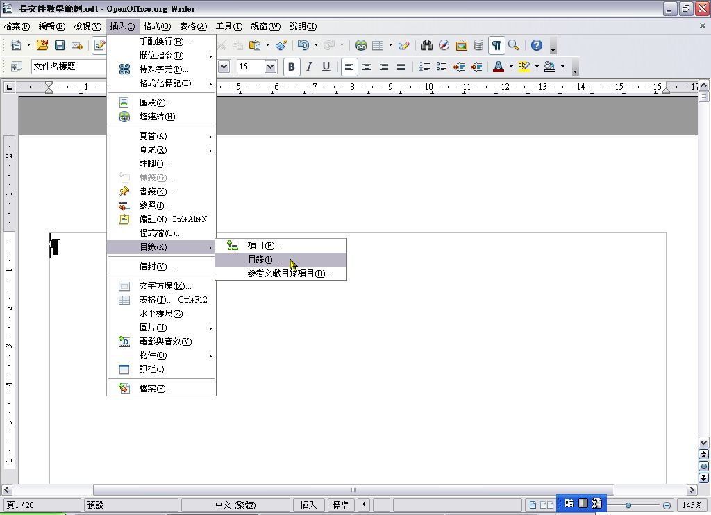
這樣子就會在第一頁加入一個新的空白頁。然後把插入點移到這個頁面裡。接著按一下功能表的「插入」＼「目錄」＼「目錄」。
步驟四：
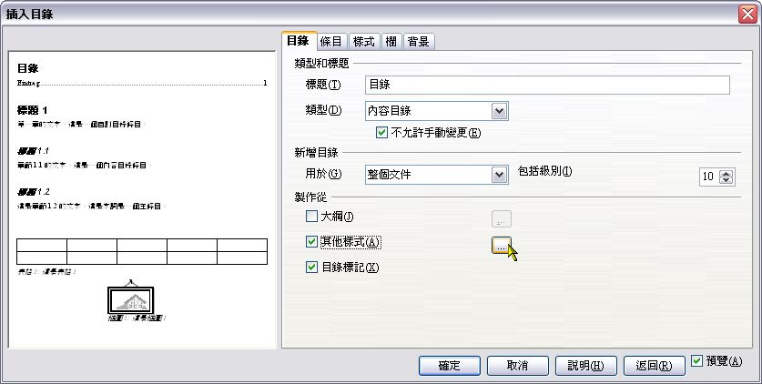
在「插入目錄」的視窗內，切換到「目錄」標籤。在上方的「標題」右邊欄位，輸入目錄所需要的標題（此處為「目錄」）；「類型」則選擇為「內容目錄」。
接著在底下的「製作從」欄位內，取消勾選「大綱」（因為範例的文件不是利用大綱建立出來的），然後勾選「其他樣式」，最後按它右邊的「指定樣式」鈕。
〔補充說明〕
Writer可製作的目錄類型很多，包括字母索引、插圖目錄、表格目錄、物件目錄、文獻目錄和使用者自訂等，光就這一點來說，對於撰寫書籍或研究論文的人頗為方便。但是，如果所使用的文書處理軟體沒有這麼多項目，不要以為就沒辦法製作這些類型的目錄，因為目錄的製作方式大同小異，況且有製作目錄功能的軟體，起碼會提供製作索引和目錄兩項。只要有這二項，按照本文所提供的製作概念，任何類型的目錄都一定能做出來。
步驟五：
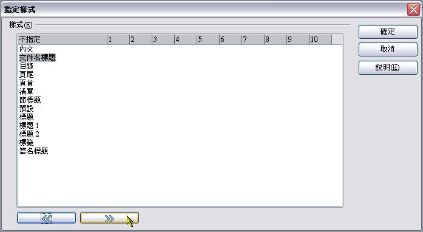
從樣式的清單內，會看到我們所建立的樣式，點選「文件名標題」後，按一下位處下方的「指定」鈕。
步驟六：
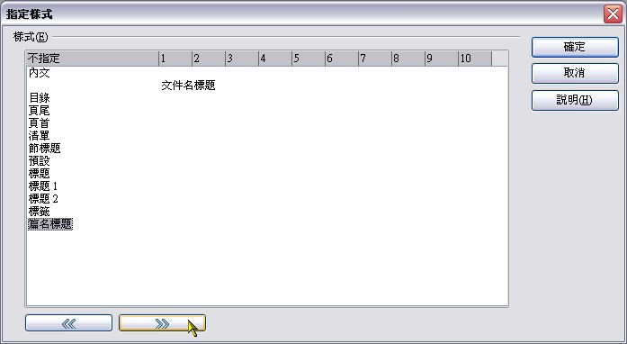
「文件名標題」就會被指定在第一個層級。接著點選「篇名標題」，然後按二下「指定」鈕。
步驟七：
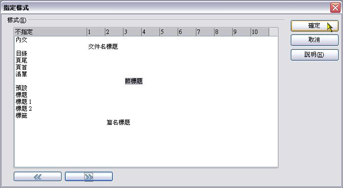
如此「篇名標題」就會被指定在第二個層級。以相同的方法，把「節標題」指定為第三個層級。
全部指定完畢後，按一下「確定」。
步驟八：
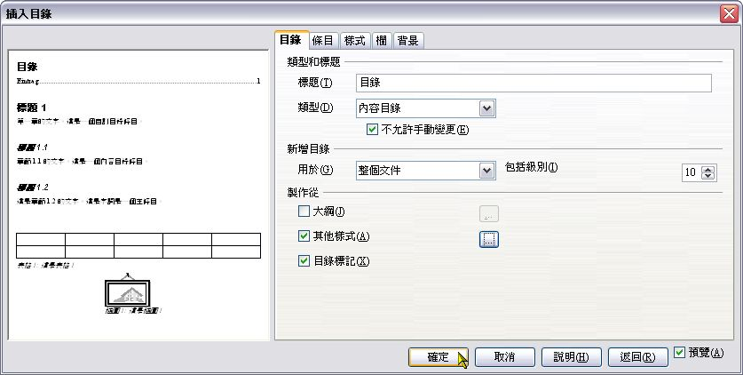
回到「插入目錄」視窗後，按「確定」。
步驟九：
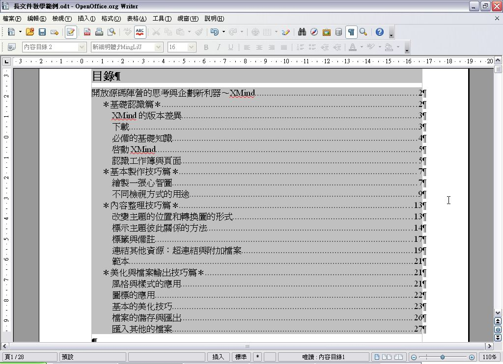
目錄就會自動加進來，各個標題都按照屬層次，有不同程度的縮排，至於頁次也是自動加入。
步驟十：
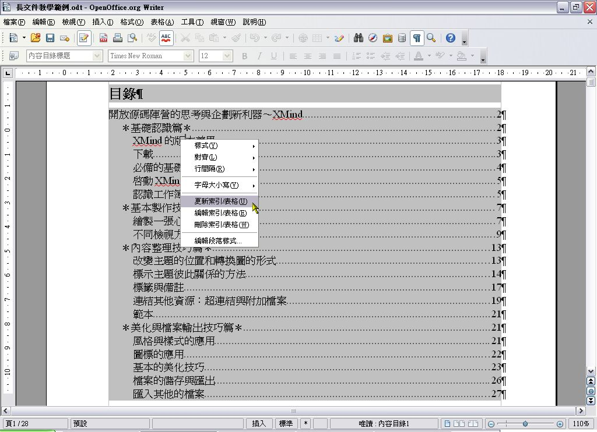
如果內容有變動，導致標題或頁次有所更動，這時別忘記更新目錄，否則頁次是不會主動更新。這時可以在目錄上按滑鼠右鍵，從快顯功能表內點選「更新索引/表格」，整個目錄就會更新（包括標題和目次）。
到此，大家應該會發現這個目錄的字型和段落間距都不大適合閱讀。非只不容易看出差別，段落間也太密集，所以我們來改變一下。
〔補充說明〕
另外還有一個更新的方法，就是先把插入點移到目錄內，然後按功能表的「工具」＼「更新」＼「目前的目錄」。
如果目錄有很多種類型，例如還有表格目錄等，那就選擇「全部的目錄」，這樣子更新起來比較快。要注意的是，若選擇「全部的目錄」，插入點就不一定得要移到目錄內，在文件的任意處都可以。
步驟十一：
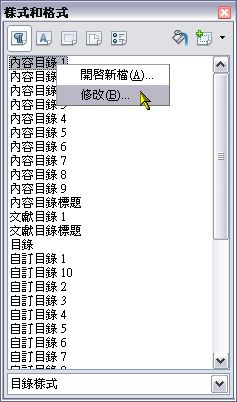
以前面的方法開啟「樣式和格式」視窗，在最底下選擇「目錄樣式」，Writer內建的目錄樣式就會列出來。我們在「內容目錄1」上按滑鼠右鍵，從快顯功能表上點選「修改」。
步驟十二：
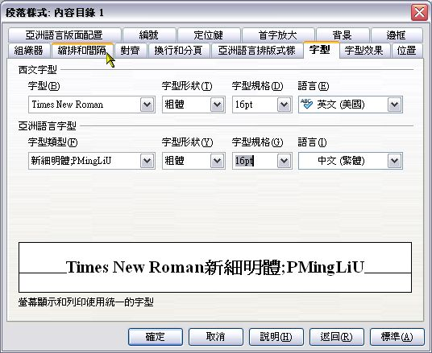
切換到「字型」標籤，我們把「字型形狀」改為「粗體」；「字型規格」改為「16pt」。
接著我們切換到「縮排和間隔」標籤。
步驟十三：
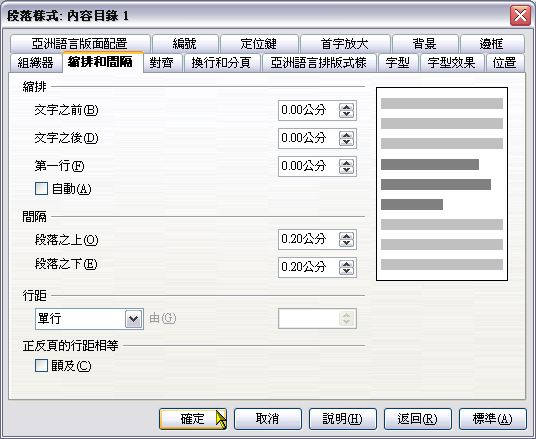
在「間隔」欄位內，把「段落之上」和「段落之下」都設為0.2公分，最後按「確定」。
步驟十四：
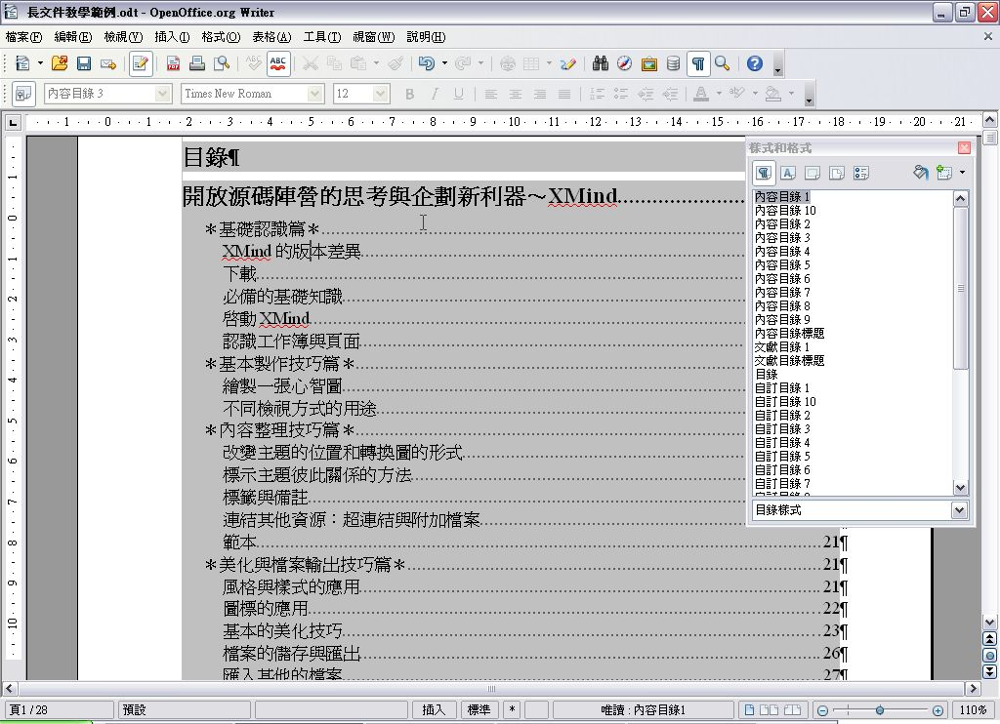
我們會看第一層級的目錄，已經變為粗體，16pt，和前後段的距離也都多了0.2公分。
為何會這樣呢？當然是和目錄的樣式有關。在Writer的預設值內，目錄套用的樣式就是「內容目錄」，我們更改了「內容目錄」的樣式，目錄的格式設定當然就跟著變了。
但，我們可以改變目錄的樣式嗎？當然是可以，不然就太沒有彈性啦！
步驟十五：
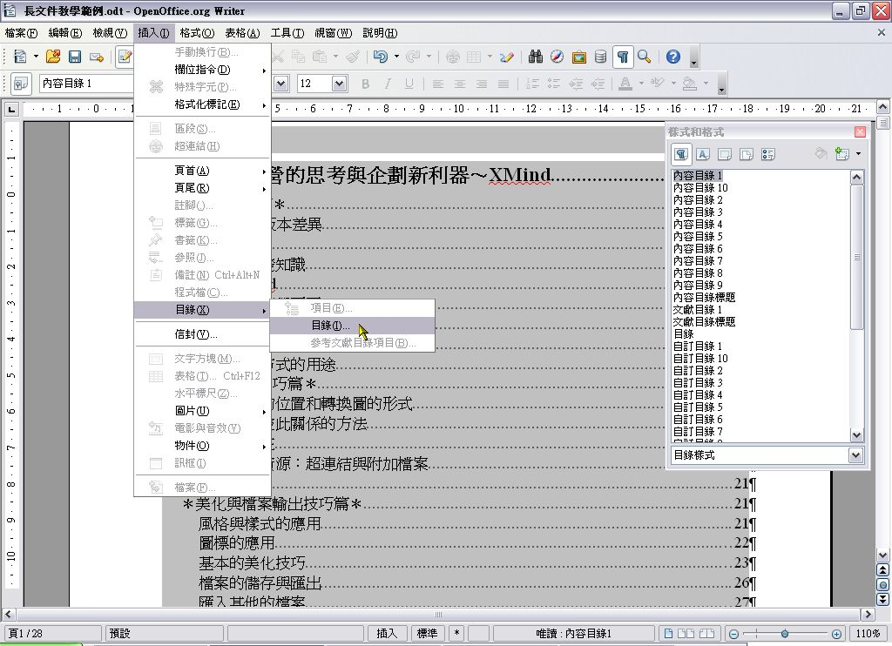
按功能表的「插入」＼「目錄」＼「目錄」。
〔補充說明〕
在這個步驟，大家會發現「插入」選單內有很多項目不能用，那是因為目錄預設為「不允許手動變更」，先前加入目錄時，我們並沒有把它取消，因此當插入點在目錄裡面時，就會有部份功能不能使用的現象。
步驟十六：
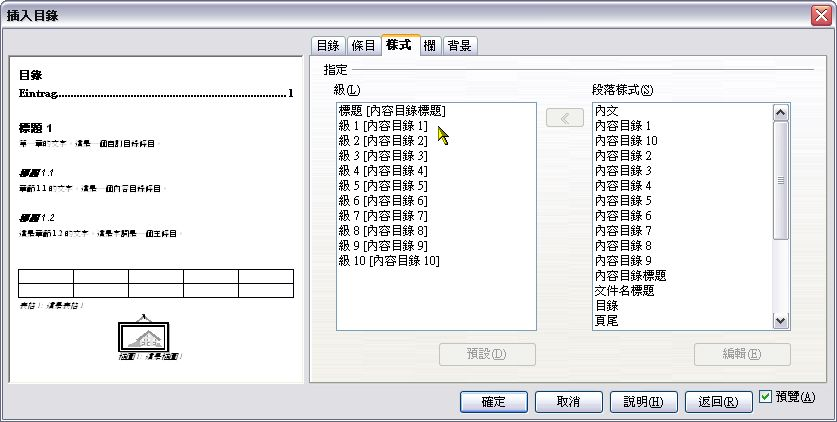
將標籤切換到「樣式」，在「級」這邊的欄位，就是目錄中各個層級所指定套用的樣式，我們可以另行設定樣式（會出現在右邊的「段落樣式」欄位內），然後分別指定給「級」這一邊的各個層級套用。
〔補充說明〕
要修改目錄的樣式，有一個比較簡易快速的方法，其步驟如下：
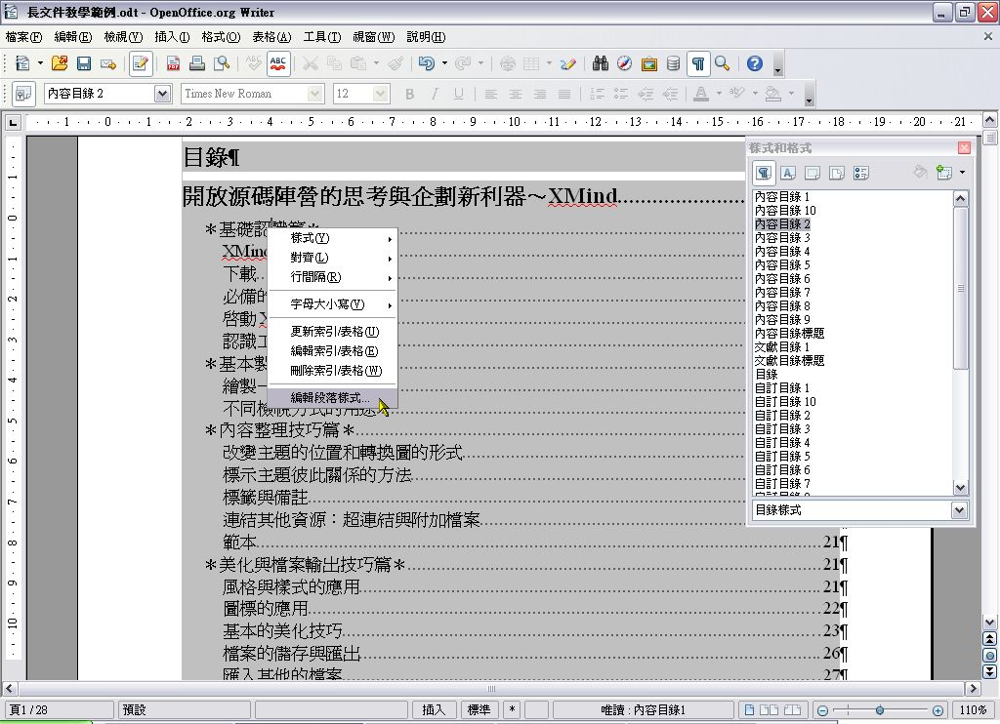
在想修改的目錄內容上按一下滑鼠右鍵，從快顯功能表上點選「編輯段落樣式」。
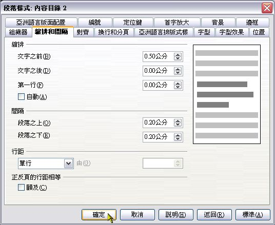
切換到「縮排和間隔」標籤，設定好段落的間隔後按「確定」。
這裡 Attila 只是示範怎麼改，至於格式要作哪些修改，大家可根據自己的需要，自行切換到其他標籤內修改。
所有套用該目錄樣式的部份，通通會一併改過來。
（待續）
您也許有興趣閱讀以下文章:
- 淺談長文件的製作～以 Writer 為例 (4) - 2009-06-26
- 淺談長文件的製作～以 Writer 為例 (2) - 2009-05-20
- 淺談長文件的製作～以 Writer 為例 (1) - 2009-05-05